Resources: UTwente slides + Attention is all you need. Also, I genuinely suggest watching this video which explains very well the mathematics and architecture of the Transformers.
Transformers
The main motivation for the transformer architecture was to improve the ability of neural networks to handle sequential data. Transformers can process data in parallel.
Dimensions:
B: batch size
L: sequence length
H: number of heads
C: channels(also called d_model, n_embed)
V: number of modelsInput embedding (B, L, C).
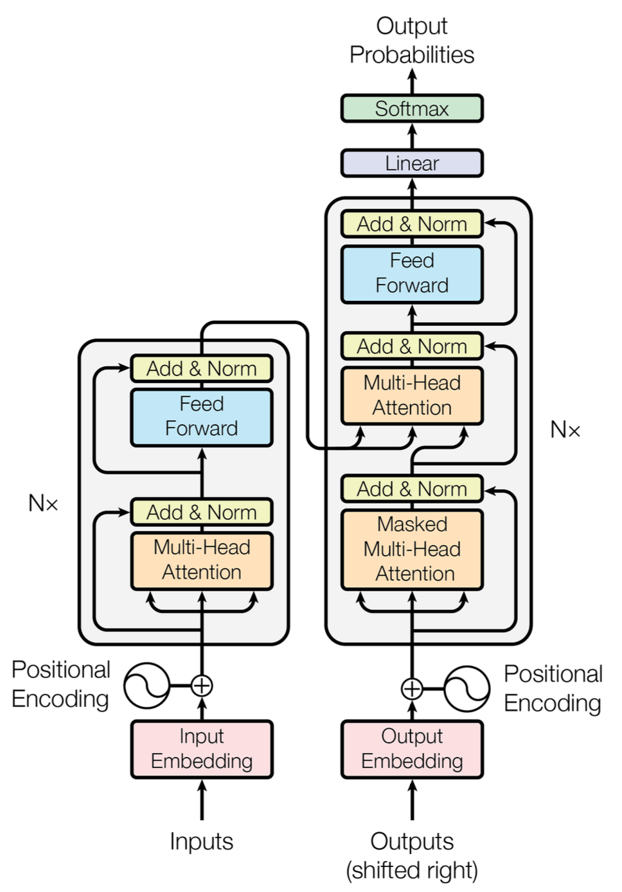
- A parallel encoder on the left
- An autoregressive decoder on the right
- We can see that the output of the encoder is input for the decoder
I already covered what encoders and decoders are in Autoencoders.
What is an input embedding?
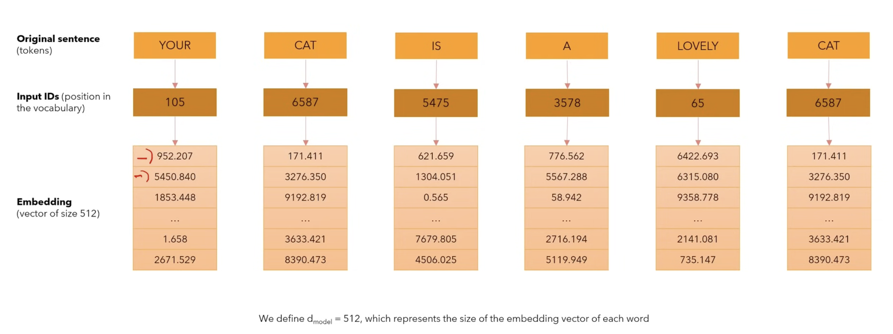
What’s important to understand is that:
- the original sentence is derived into tokens (can be multiple tokens)
- then the tokens are mapped to some unique IDs that represent their position in the vocabulary. This one doesn’t change since the vocabulary is fixed.
- embedding is the actual numerical representation of what the token means to the model (the meaning of the word). These values can change with fine tuning or training. They are supposed to change w.r.t the loss function.
What is positional encoding?
- We want the word to carry some information about its position in the sentence.
- We want the model to map words that are close to each other as “close” and those that are distant as “distant”.
- We want the positional encoding to represent a pattern that can be learned by the model.
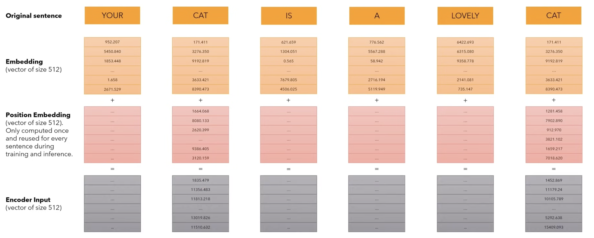
Having the original sentence, we first convert to embeddings using the previous layer, to which we add the Position Embedding Vector of size d_model which is only computed once, and not learned! This vector represents the position of the word inside of the sentence. The output should represent the encoder input of size d_model.
okok but hoooow do you get the positional embedding vector?
- Sinusoidal Embedding Intuition
Sinusoidal Embedding Intuition
In the paper we can see the following 2 formulas which are sine and cosine functions of different frequencies:
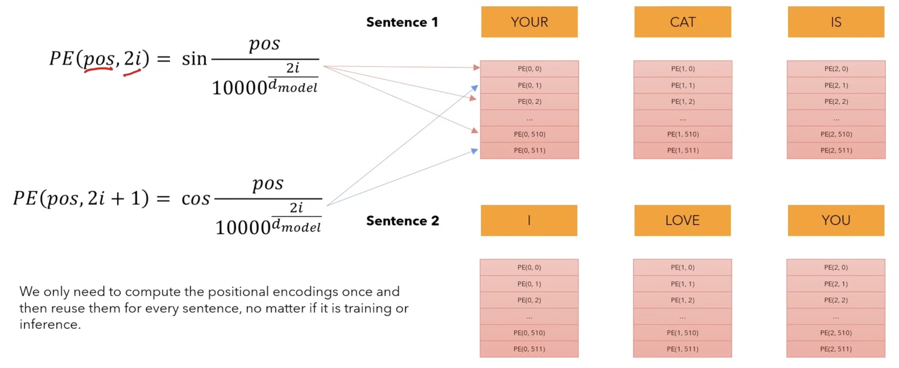
Multi-Head Attention
Self-Attention
Self-Attention allows the model to relate words to each other. It is a special case of attention where the query(), key(), and value() all come from the same source. It allows each element of a sequence to consider (or “attend to”) all other elements in the same sequence.
- Let’s consider the sentence with sequence length and .
- The matrices are the same matrix representing input of 6 words represented by a vector of size 512.
- The softmax function ensures the values on each row sum up to 1. The values on each column represent how strong the words are correlated to one another.
- By multiplying the softmax results with matrix V of size (6,512), we get a result that is of the same size as the input. This way, we not only get the position and meaning of the word, but also the relationship with ALL the other words.
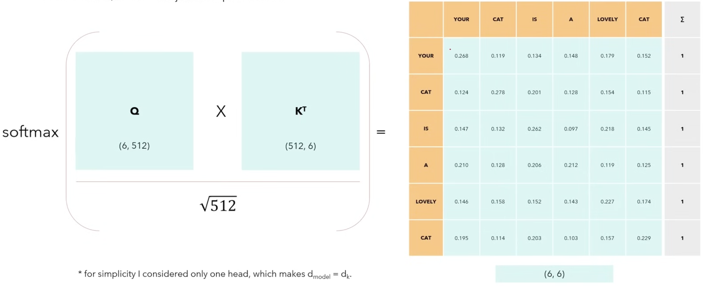
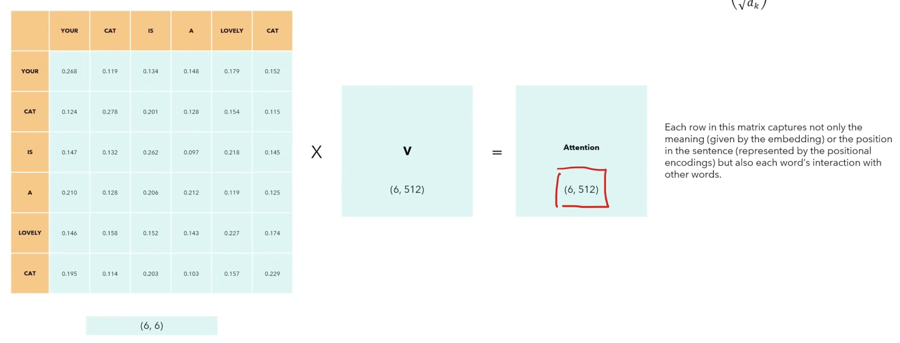
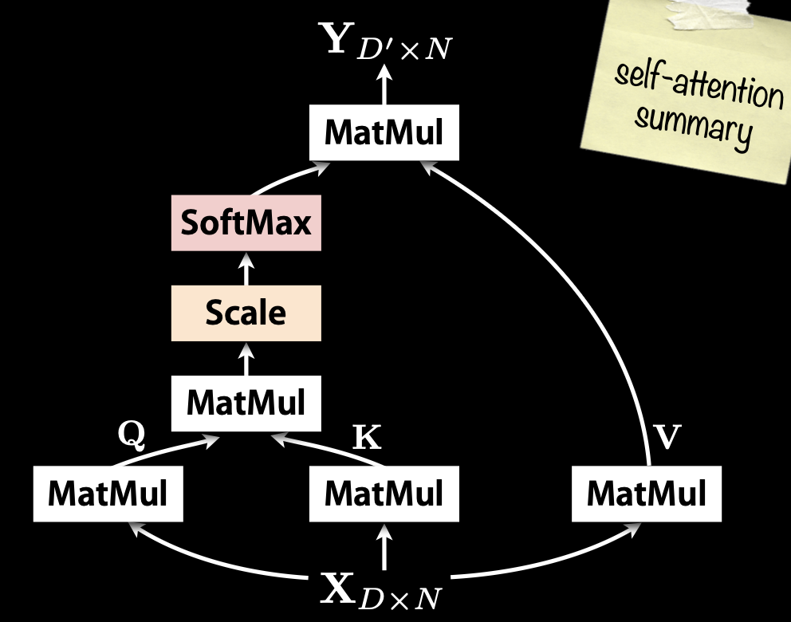
Multi-Head Attention
So I covered what Self-Attention is. Multi-head attention allows the model to jointly attend to information from different representation subspaces at different positions. With a single attention head, averaging inhibits this.
Where the projections are parameter matrices
- In the original paper, they employ h = 8 parallel attention layers, or heads. For each of these we use . Due to the reduced dimension of each head, the total computational cost is similar to that of single-head attention with full dimensionality.
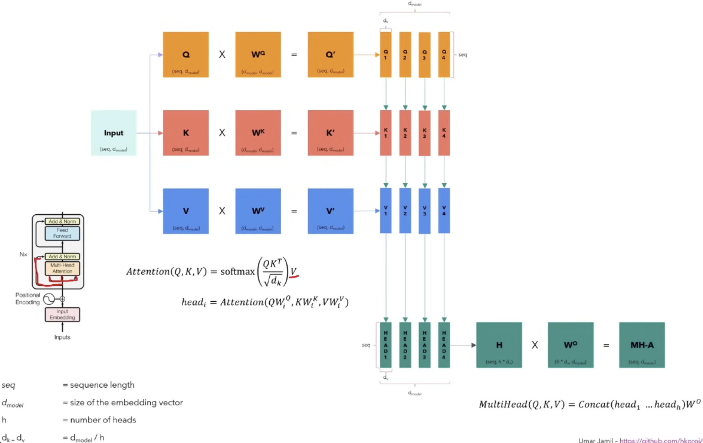
A summary on MultiHead Attention as to how I understand it
- So in my words, we get the input and split it into 3 copies of it (Q,K,V). Each of this copy is multiplied with their respective parameter matrices . The result (Q’, K’, V’) is 3 matrices with the same size as the input which we further split into smaller matrices of size (, ). Every head will see the full sentence, but a smaller part of the embedding of each word. Then we calculate the attention of these smaller matrices () using the formula from Self-Attention resulting into the matrices of the same size as before. And in the end we apply the MultiHead formula where we concatenate them and get the matrix which we further multiply with and get the final MultiHead Attention Matrix (MH-A).
We do this because we want each head to look at a different aspect of the same word. We know that, depending on the context, one word could be a noun, a verb, adverb, etc. So each head might learn how to relate that word as a noun, verb, adverb, etc.
Steven covered this pretty nicely: don't the heads just end up doing the same things?
Intuitively, it could happen. But here’s why it usually doesn’t:
- Each head has its own matrices, all initialized differently.
- During training, if two heads start doing the same thing, they don’t both get rewarded equally — gradients nudge them to specialize and reduce redundancy.
- Why? Because doing the same thing doesn’t reduce the loss as effectively as learning different complementary patterns.
This way, each head learns to watch different aspects of the same word.
QKV
Attention Mechanism
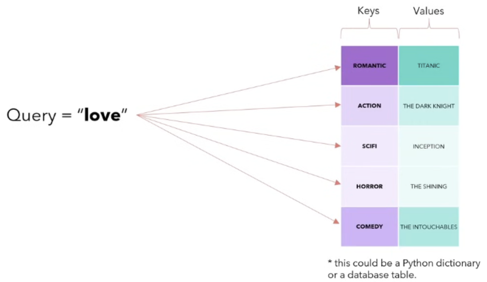
- Query(Q): "What am I looking for?"
- Key(K): "What do I have?"
- Value(V): "What you get for choosing me?"
Layer Normalization
Layer Normalization applies normalization across features instead of across batches in the case of Batch Normalization
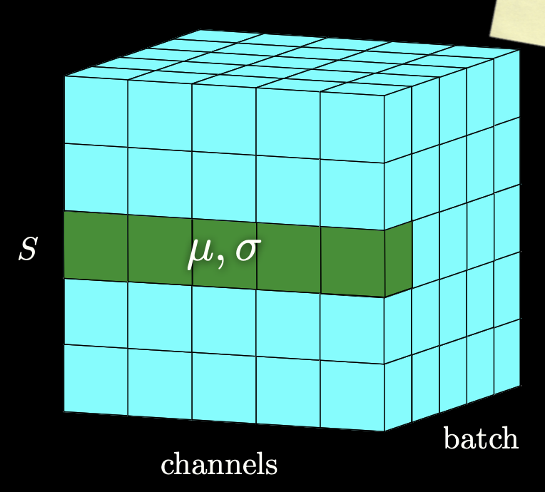
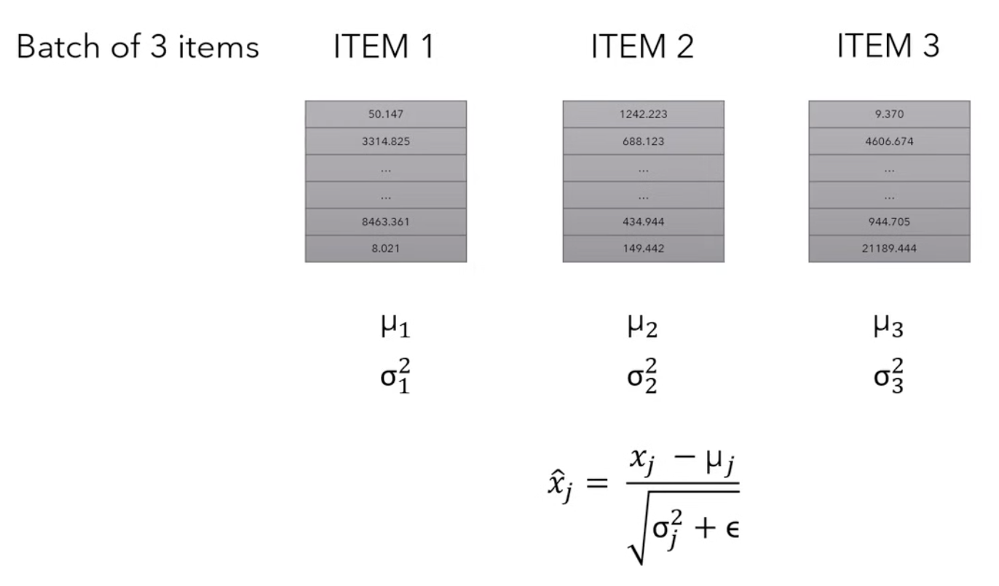
- For example, if we take 3 items (could be the embedded inputs or features), we calculate the mean() and the variance () independently from each other and we replace each value with another value that is given by this expression
- So basically, we are normalizing so that all values are in the range of .
- This was not in the lecture, but normally, we would also introduce two new parameters usually called gamma(multiplicative) and beta(additive) that introduce some fluctuations in the data, because maybe having all values between 0 and 1 may be too restrictive for the network. The network will learn to tune these two parameters to introduce fluctuations when necessary.
Decoder
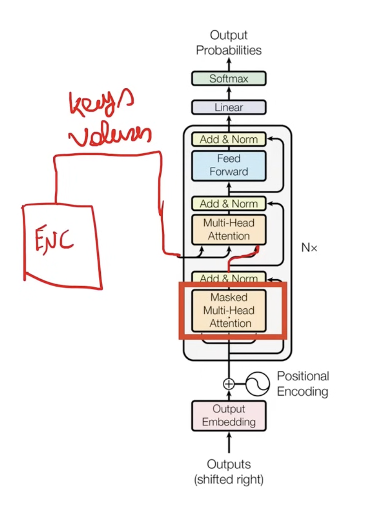
- On the decoder side of the transformer, we get the input from the encoder as (K,V) but the Query comes from the Masked Multi-Head Attention layer in the decoder. This is called cross multi-head attention.
- The Masked Multi-Head Attention layer is the self-attention of the input sentence of the decoder.
Masked Multi-Head Attention
Summary of MMHA
Our goal is to make the model causal: it means the output at a certain position can only depend on the words from the previous position. The model must not be able to see future words.
We just add the causal mask
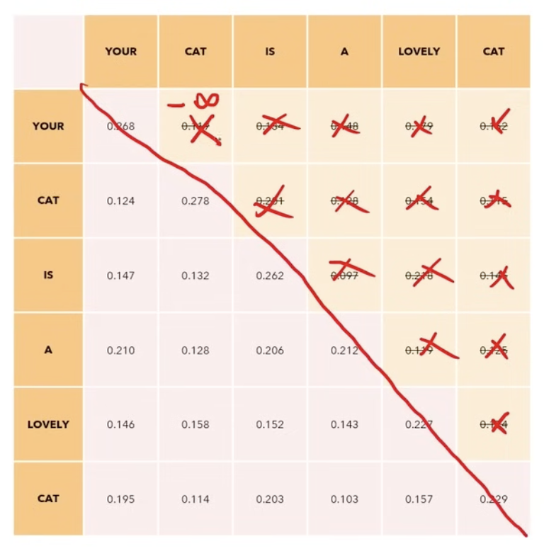
In the MultiHead Attention process, we apply this process before we apply the softmax function.
Inference and Training of a Transformer Model
<SOS> and <EOS> are two special tokens of the vocabulary that tell the model what the start and end of a sentence is.
- Let’s say we want to translate the English sentence “I love you very much” to the Italian “Ti amo molto”.
- We can see that in the architecture of the transformer, the input of the decoder says (shifted right). That’s because we add the <SOS> token at the start.
- We have to feed two sentences of the same length to the transformer. How to do this? We add padding words to reach the desired length.
- We expect the output to be “Ti amo molto <EOS>”. This is called the “label” or the “target”.
- Then we compute the Cross-Entropy Loss and back-propagate through all the weights.
- It all happens in one time step!
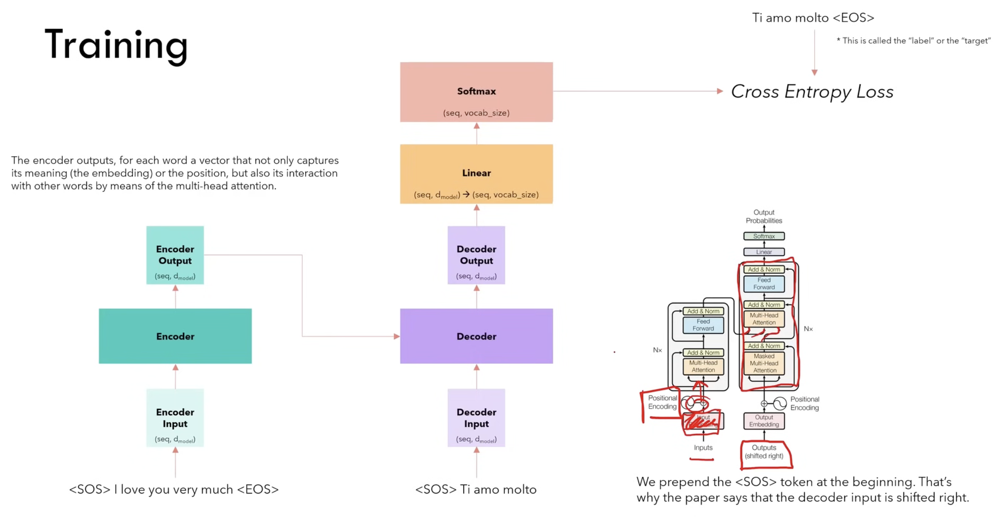
Inference is the phase where a trained transformer processes new inputs and generates outputs, such as translating text or completing sentences. Unlike training, where the model sees the entire sequence at once, during inference, the transformer generates output step-by-step, especially in tasks like text generation.
The main difference here is that we predict each token step-by-step. It doesn’t all happen in one time step as in the training process.
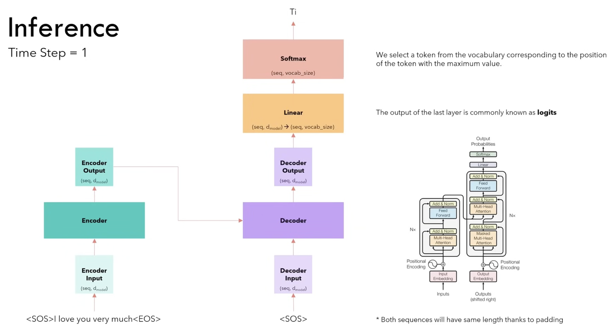
At the next time steps we don’t need to compute the encoder output again. We take the output from the previous time step “Ti”, we append it to the input of the decoder <SOS> and we repeat.
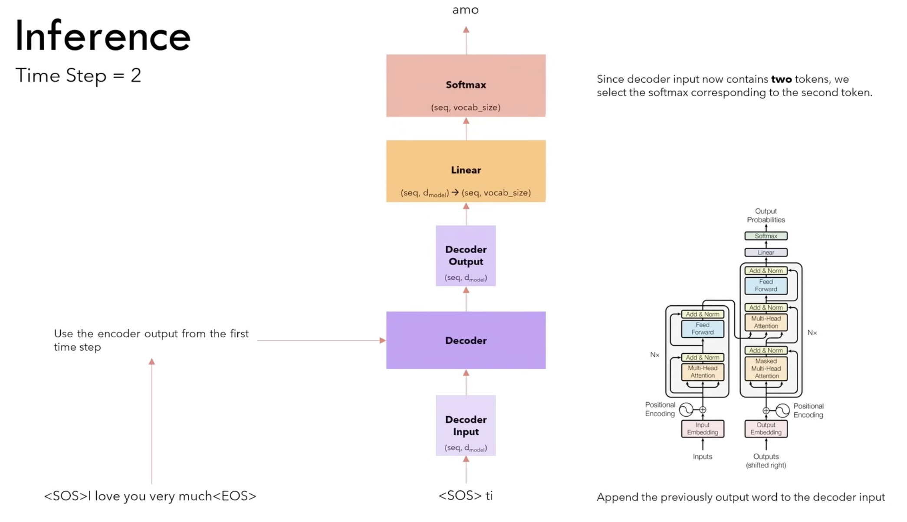
We stop when we see the <EOS> token.
Why do we need more time steps?
- We selected, at every step, the word with the maximum softmax value. This strategy is called greedy and usually does not perform very well.
- A better strategy is to select at each step the top B words and evaluate all the possible next words for each of them and at each step, keeping the top B most probable sequences. This is the Beam Search strategy and generally performs better.
Linear Layer
The linear layer maps the output of the decoder from back to (seq, vocab_size).